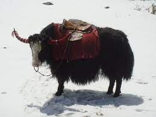

| Yak Safari- The true fun with Yaks |
|
How to begin the Yak
Safari

A
two-day Yak Safari can be arranged while trekking from Yuksom, situated
at 5800 feet above sea level to Dzongri. This is a tedious route but
you can’t help marvel at the wonders of nature all the while. From
Dzongri, you can take different routes but one of the most popular ones
is to move along the banks of the river towards the east and cross the
bridge over the Prek Chu river, from where it is an hour’s climb to
Tangsing, located along the slopes of Pandim mountains.
|
| Do
I have to book the Yak Safari in advance The Yak Safaris
are organised by either Sikkim Tourism or by a number of specialised
operators. For the Yuksom-Dzongri and upward route, it is best to have
your safari booked in advance.
|
How long will the Yak
Safari last
It depends on
the route you choose. It can be anything from two days to more. |
| Back To Main |